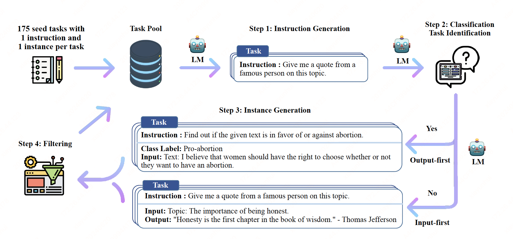
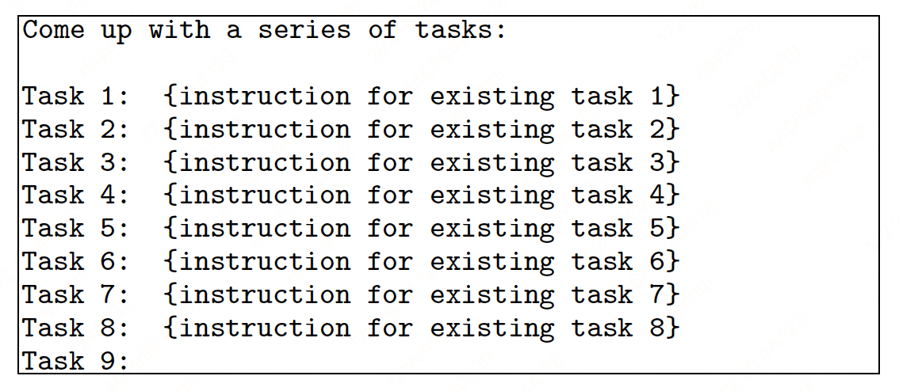
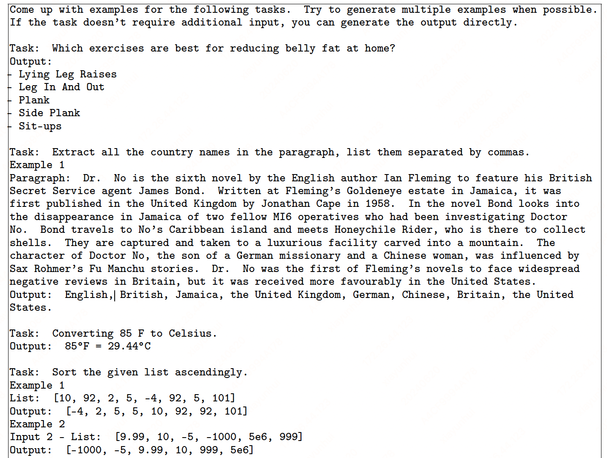
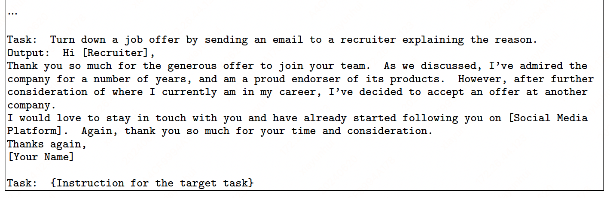
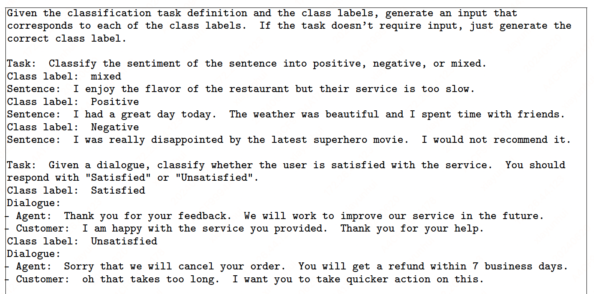
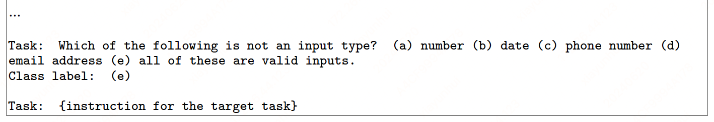

SELF-INSTRUCT#

Note
In this work, we introduce SELF-INSTRUCT, a semi-automated process for instruction-tuning a pretrained LM using instructional signals from the model itself. The overall process is an iterative bootstrapping algorithm, which starts off with a limited (e.g., 175 in our study) seed set of manually-written tasks that are used to guide the overall generation.
In the first phase, the model is prompted to generate instructions for new tasks. This step leverages the existing collection of instructions to create more broad-coverage instructions that define (often new) tasks.
Given the newlygenerated set of instructions, the framework also creates input-output instances for them, which can be later used for supervising the instruction tuning.
Finally, various heuristics are used to automatically filter low-quality or repeated instructions, before adding the remaining valid tasks to the task pool.
This process can be repeated for many iterations until reaching a large number of tasks.
paper: https://arxiv.org/pdf/2212.10560
Data Generation#
The instruction data we want to generate contains a set of instructions \(\{I_{t}\}\), each of which defines a task \(t\) in natural language.
Task \(t\) has \(n_{t}\ge 1\) input-output instances \(\{(X_{t,i}, Y_{t,i})\}_{i=1}^{n_t}\). A model \(M\) is expected to produce the output, given the task instruction and the corresponding input: \(M(I_t, X_{t,i}) = Y_{t,i}\).
Tip
Instruction and instance input does not have a strict boundary in many cases.
Instruction Generation#
At the first step, SELFINSTRUCT generates new instructions from a small set of seed human-written instructions in a bootstrapping fashion. We initiate the task pool with 175 tasks (1 instruction and 1 instance for each task). For every step, we sample 8 task instructions from this pool as in-context examples. Of the 8 instructions, 6 are from the human-written tasks, and 2 are from the model-generated tasks in previous steps to promote diversity.

Classification Task Identification#
Because we need two different approaches for classification and non-classification tasks, we next identify whether the generated instruction represents a classification task or not in a few-shot way.
Instance Generation#
Given the instructions and their task type, we generate instances for each instruction independently.
A natural way to do this is the Input-first Approach, where we can ask an LM to come up with the input fields first based on the instruction, and then produce the corresponding output.
 
However, we found that this approach can generate inputs biased toward one label, especially for classification tasks (e.g., for grammar error detection, it usually generates grammatical input). Therefore, we additionally propose an Output-first Approach for classification tasks, where we first generate the possible class labels, and then condition the input generation on each class label.
 
Filtering and Postprocessing#
To encourage diversity, a new instruction is added to the task pool only when its ROUGE-L similarity with any existing instruction is less than 0.7, etc.
Finetuning the LM to Follow Instructions#
After creating large-scale instruction data, we use it to finetune the original LM (i.e., SELF-INSTRUCT, total 52K instructions and 82K instances).
Tip
We concatenate the instruction and instance input as a prompt and train the model to generate the instance output in a standard supervised way. To make the model robust to different formats, we use multiple templates to encode the instruction and instance input together. For example, the instruction can be prefixed with “Task:” or not, the input can be prefixed with “Input:” or not, “Output:” can be appended at the end of the prompt or not, and different numbers of break lines can be put in the middle, etc.